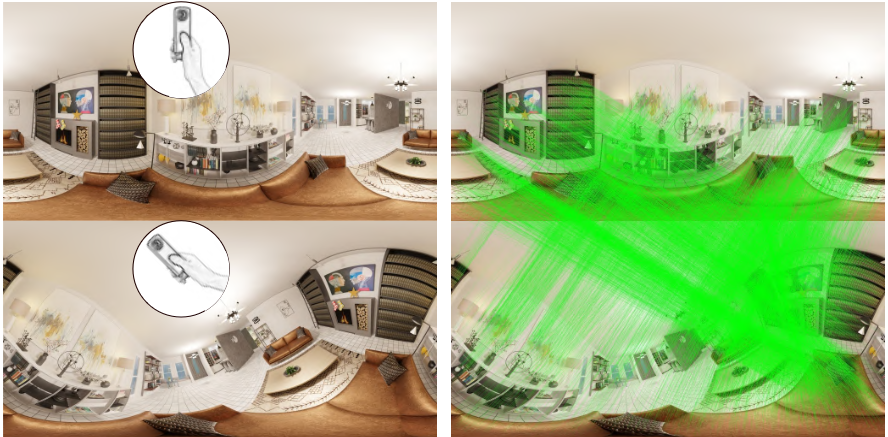
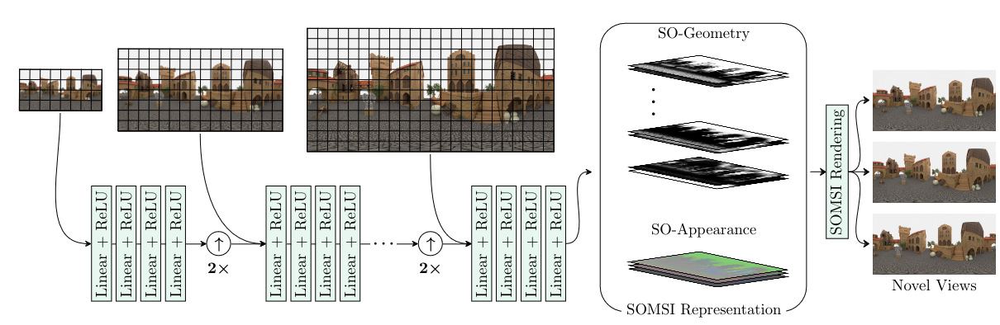
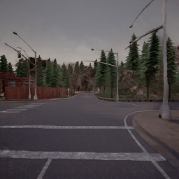
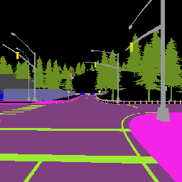
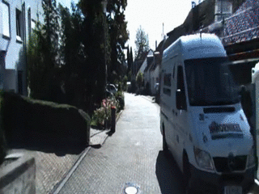
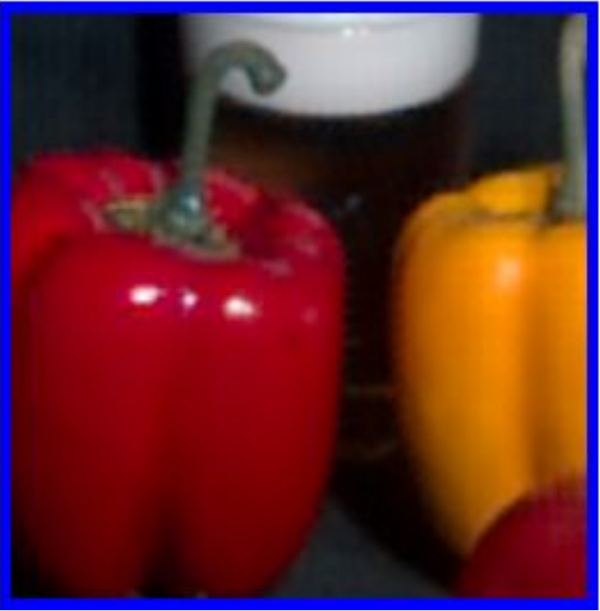
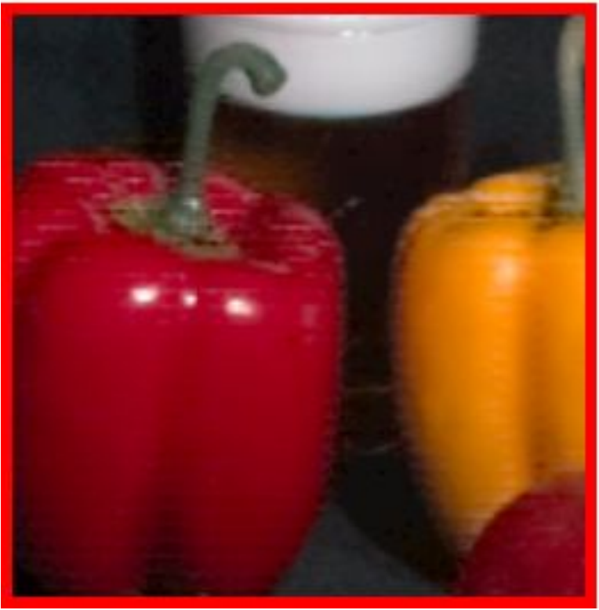
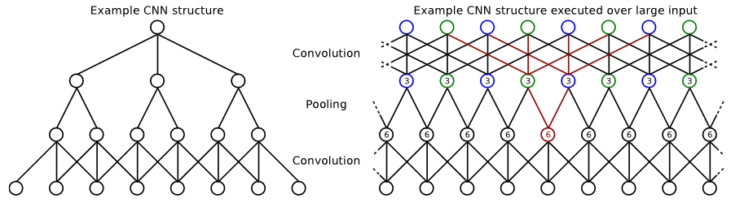

|
Tewodros A. Habtegebrial I am a Researcher at the German Research Center for AI and a final-year PhD candidate at the University of Kaiserslautern-Landau, supervised by Prof. Didier Stricker.
I hold a Masters in Computer Science and BSc in Electronics and Communications Engineering. In 2021 I received the Google PhD Fellowship in Machine Perception, Speech Technology and Computer Vision, under the mentorship of Prof. David Salesin.
I frequently collaborate with Varun Jampani.
CV / Email / Google Scholar / Github / LinkedIn |

|
ResearchI'm interested in image based rendering (IBR) and applications. Especially, in leveragining Deep Generative Models for IBR from minimal user input such as semantic maps and textual descriptions. |
|
 |
SphereGlue: Learning Keypoint Matching on High Resolution Spherical Images
Christiano Gava, Vishal Mukunda, Tewodros A. Habtegebrial, Federico Raue, Sebastian Palacio, Andreas Dengel The IEEE / CVF Computer Vision and Pattern Recognition Conference (CVPR), 2023 |
|
 |
SOMSI: Spherical Novel View Synthesis with Soft Occlusion Multi-Sphere Images
Tewodros A. Habtegebrial, Christiano Gava, Marcel Rogge, Didier Stricker, Varun Jampani The IEEE / CVF Computer Vision and Pattern Recognition Conference (CVPR), 2022 Project page |
|
  |
Generative View Synthesis: From Single-view Semantics to Novel-view Images
Tewodros A. Habtegebrial, Orazio Gallo, Varun Jampani, Didier Stricker Advances in Neural Information Processing Systems (NeurIPS) , 2020 Project page |
|
 |
Fast View Synthesis with Deep Stereo Vision
Tewodros A. Habtegebrial, Christian Bailer, Kiran Varanasi, Didier Stricker 14th International Conference on Computer Vision Theory and Applications (VISAPP) , 2019 |
|
  |
Deep Convolutional Networks For Snapshot Hyperspectral Demosaicking
Tewodros A. Habtegebrial, Gerd Reis, Didier Stricker, Workshop on Hyperspectral Image and Signal Processing: Evolution in Remote Sensing, (WHISPERS) , 2019 |
|
 |
Fast Dense Feature Extraction with CNNs that have Pooling or Striding Layers
Christian Bailer, Tewodros A. Habtegebrial, Kiran Varanasi, Didier Stricker 29th British Machine Vision Conference, (BMVC) , 2018 |
|
Template for this web page is taken from https://github.com/jonbarron/website |